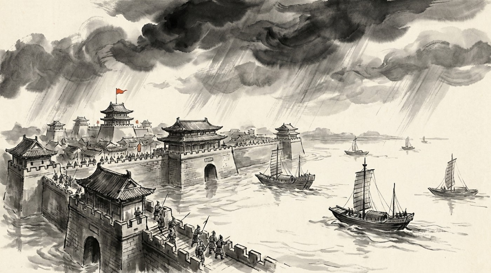

西へ
諸葛亮の設計図どおり、 劉備は西の益州を目指しました。 山にかこまれた、守りやすくて豊かな土地です。
この作戦を立てたのは、もうひとりの天才軍師 龐統でした。 ところが進軍の途中、彼は敵の矢の雨に倒れます。 倒れた場所の名は落鳳坡——「おおとりが落ちる坂」。 「鳳雛（おおとりのひな）」と呼ばれた男が、その名前の場所で死にました。
かわりに劉備を助けたのが、益州の地元の軍師 法正です。 現実を見る目がするどく、思いきった手を打つ人でした。 214年、劉備はついに益州を手に入れます。
このころ、西から流れてきた馬超も仲間になりました。 かつて曹操を追いつめ、 ひげを切って顔をかくさせたほどの猛将です。 ただし一族はすでに皆殺しにされ、帰る家はありませんでした。
八百人で、十万人を追い返す
同じころ東では、孫権が 十万の兵で合肥の城を囲んでいました。 守るのは張遼たち、わずか七千。
張遼は、城にこもりませんでした。 夜明け前に、選び抜いた八百人だけを連れて城を出ます。 そして十万の陣に、まっすぐ斬りこみました。
不意をつかれた呉軍は総崩れになります。 孫権は小山の上まで逃げ、そこを張遼に囲まれました。 凌統は自分の部下が全滅するまで戦って主君を守り、 甘寧が矢を射て道を開きます。 太史慈は、この戦いで受けた矢がもとで死にました。
孫権のそばには、いつも周泰がいました。 身分が低いと軽く見られていた人です。 のちに孫権は宴会でこの男の服を脱がせ、体じゅうの傷を一つずつ指さして、 「これはどこの戦の傷か」と本人に語らせました。 語り終わるころには、誰も何も言えなくなっていたそうです。
以後、呉では「張遼が来るぞ」と言えば泣いている子どもが黙った、と伝わります。
老人と、速い男
219年、劉備は漢中へ攻めのぼりました。 ここを取られると益州が丸見えになる、という大事な場所です。
守っていたのは、曹操軍でいちばん足の速い 夏侯淵。 法正はこの相手をよく見ていて、こう言いました。 「あの人は、味方が危ないと自分で飛び出す。そこをねらいましょう」。
まず高い山を先に取り、夏侯淵の陣に火をかけます。 あわてて修理に出てきたところへ、上から一気に駆け下りたのが 六十をこえた黄忠でした。 速さで生きてきた男が、老人の一撃で死にます。
夏侯淵の遺体を引き取って葬ったのは、 敵方にいた姪の夏侯氏—— 張飛の妻です。 敵と味方の線は、家族の上を平気で横切っていきます。
劉備はこの勝利で漢中を手に入れ、「漢中王」を名乗りました。 蜀という国の形が、ここでほぼできあがります。
合肥（215年）八百対十万。三国志でいちばん無茶な勝ち方です。
定軍山（219年）速さが持ち味の夏侯淵が、老将の奇襲に討たれました。
樊城（219年）関羽は水攻めで于禁の七軍を降伏させ、その名は中国じゅうに響きます。
ところがそこへ徐晃が来て包囲を破り、さらに背後を呂蒙に取られました。
三か月で、頂点から死までいっきに落ちます。
水に沈む城、白い服の商人
劉備が漢中で勝ったのと同じ年、荊州を守っていた 関羽が北へ動きました。 ねらいは魏の樊城。守るのは曹仁です。
ちょうど長雨で川があふれ、救援に来た 于禁の七つの軍が水にのまれました。 関羽は船で乗りつけ、于禁を降伏させます。 三十年まじめにやってきた古参が、最後の最後で膝を折った瞬間でした。
曹操は都を移そうかと本気で考えたといいます。 そこへ、二つのことが同時に起きました。
ひとつは徐晃の到着。 関羽とは昔からの友人でしたが、陣の前で笑って昔話をしたあと、 振り向いて「関羽の首に恩賞を出す」と全軍に告げます。
もうひとつは、背中です。 呉の呂蒙が、兵を白い服の商人に変装させて船に乗せ、 荊州の見張りを次々に捕まえて、ほとんど戦わずに城を落としていました。 関羽が振り返ったときには、帰る場所がなくなっていたのです。
麦城まで落ちのびた関羽は、呉軍につかまり、 子の関平とともに殺されました。 劉備と誓いを立ててから、三十六年目のことです。
呂蒙が関羽の霊にとりつかれ、全身から血を噴いて死んだ——という場面は小説の作り話です。 実際の呂蒙は、以前から病気を持っていて、荊州を取った数か月後に病死しました。

ひとつの時代が、終わる
翌220年、曹操が洛陽で死にます。六十六歳。 最後に残した言葉は天下のことではなく、家族と、 残していく女性たちの暮らしについての細かい指示でした。
夏侯惇も、その数か月後に後を追うように死にます。 正妻の卞夫人は、 低い身分から皇太后になっても、ぜいたくな器ひとつ使わなかった人でした。
跡つぎ争いに勝った曹丕のそばには、 知恵を貸した郭皇后がいます。 みなしごとして育ち、頭のよさだけで皇后まで上がった人でした。 そのかげで、絶世の美女といわれた甄姫は、 のちに曹丕から死を命じられます。
跡をついだ曹丕は、その年のうちに 皇帝から位をゆずり受けます（禅譲）。 四百年続いた漢が、ここで正式に終わりました。 新しい国の名は魏。
翌221年、劉備も皇帝になります。国の名は「漢」——本家が終わったのだから、 自分たちが正しい後継ぎだ、という主張です（区別のため 蜀と呼ばれます）。
こうして三つの国がそろいました。 けれど劉備の頭の中は、国のことではありませんでした。 ——弟の仇を、取らなければ。
合肥の戦い215年 動く戦場図で見る ▶ 定軍山の戦い
219年 動く戦場図で見る ▶ 樊城の戦い
219年 動く戦場図で見る ▶
- 劉備が益州と漢中を取り、蜀の形ができた。定軍山では黄忠が夏侯淵を討ち取った。
- 関羽が樊城で于禁を降伏させて絶頂に立つが、徐晃に押し返され、呂蒙に背後を奪われて殺される。
- 曹操が死に、曹丕が漢から位をゆずり受けて魏を建国。翌年、劉備も皇帝になり、三国がそろった。